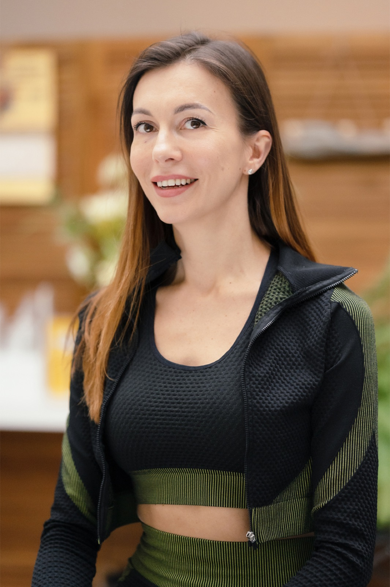

Татьяна Негреева
Основатель студии
Привет, я Татьяна Негреева. Я основала студию HomePilates для того, чтобы делать людей счастливыми и здоровыми. Да, я не боюсь громких заявлений не только потому, что я профессиональный тренер с опытом свыше 15 лет. Моя личная история с травмой позвоночника, которую я решила только с помощью пилатеса, перепробовав множество реабилитационных программ, дала мне вдохновение и заразила желанием развивать эту уникальную методику.
Я выбрала пилатес, потому что он делает меня лучше. Повышает осознанность в теле, повышает качество движения в пространстве.
Жду вас у себя в студии homepilates.ru
До встречи на тренировке.
С методом Джозефа Пилатеса я познакомилась, когда работала в фитнес индустрии. Затем я прошла множество профессиональных обучающих программ по пилатесу в России, США и Европе, после чего основала студию HomePilates.
Для меня пилатес это волшебная палочка в ежедневной работе над красотой и здоровьем собственного тела!